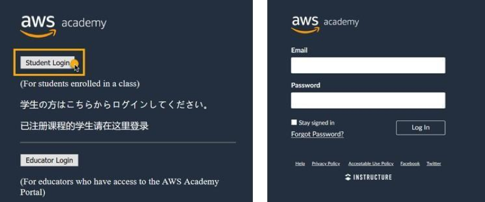
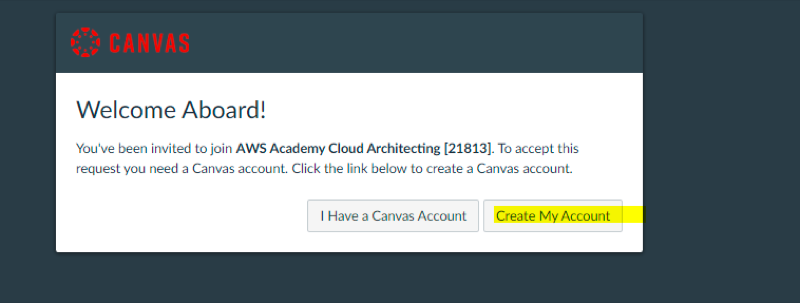
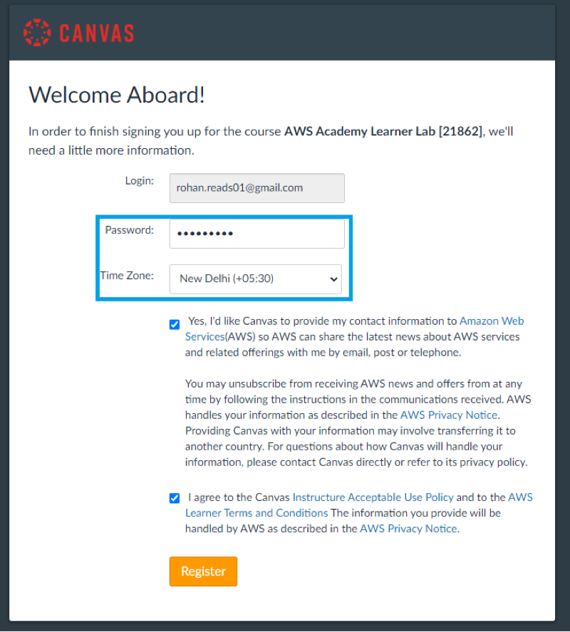
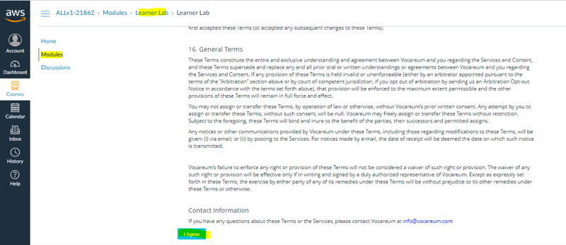
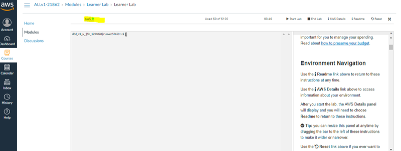
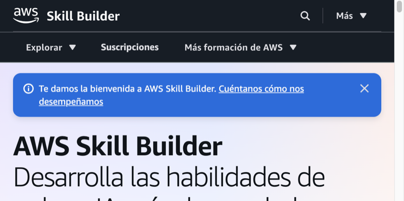
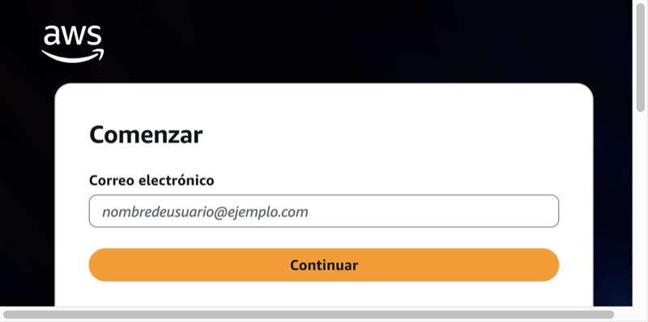

Acceso¶
Esta página explica cómo entrar a las plataformas del módulo: el curso en Academy, la consola de prácticas del Learner Lab y Skill Builder (incluida la activación y los vouchers de certificación). Cuando hayas entrado, sigue con Fundamentos de la nube AWS: allí está el mapa del módulo y las definiciones. La preparación del examen Cloud Practitioner (CLF, AWS Certified Cloud Practitioner, código CLF-C02) no se estudia aquí; está en Certificación.
Antes del Tema 1
Completa primero el acceso a Academy, el Learner Lab y, si el curso lo usa, Skill Builder. Sin consola del lab, el Tema 1 se queda en lectura; con Acceso listo, en la primera quincena ya puedes practicar.
Ten a mano tu correo institucional (el mismo en todos los pasos). Lee esto antes del Tema 1.
Tres sitios (no los mezcles)¶
Son tres puertas distintas. Si mezclas la cuenta o la URL, acabarás en un portal vacío o en un programa que no es el de la clase.
AWS Academy es el LMS (learning management system, sistema de gestión del aprendizaje) del curso: Canvas en awsacademy.instructure.com. Ahí viven los módulos de Cloud Foundations, los vídeos del LMS, las comprobaciones de conocimiento (knowledge checks) y el enlace al laboratorio. Entras con la cuenta Canvas Academy creada a partir de la invitación del profesor y tu correo institucional.
El Learner Lab es la cuenta de práctica con créditos limitados desde la que abres la consola de AWS. No es tu cuenta personal de AWS ni Skill Builder: el enlace sale desde el curso de Academy. Ahí haces los labs del módulo y las PR (prácticas evaluables del módulo, por ejemplo PR101) respetando región, créditos y limpieza al acabar.
AWS Skill Builder (skillbuilder.aws) es la plataforma de formación digital de AWS. Con la oferta del alumnado de Academy obtienes una suscripción de pago (cursos, laboratorios y exámenes de práctica oficiales). Entras con un AWS Builder ID ligado al mismo correo institucional con el que estás en Academy. En este módulo la usas sobre todo para prepararte hacia el CLF-C02 y, si completas los exámenes de práctica oficiales, para obtener vouchers.
| Sitio | URL | Para qué lo usas en el módulo | Con qué cuenta entras |
|---|---|---|---|
| AWS Academy (LMS Canvas) | awsacademy.instructure.com | Curso Cloud Foundations: módulos, vídeos, comprobaciones de conocimiento y acceso al lab | Cuenta Canvas Academy con el correo institucional de la invitación |
| Learner Lab / consola de prácticas | Enlace desde el curso Academy | Prácticas en consola con créditos limitados (labs del módulo y entregas) | Credenciales del lab que abre Academy (no es tu cuenta AWS personal) |
| AWS Skill Builder | skillbuilder.aws | Cursos digitales, exámenes de práctica oficiales y vouchers hacia la certificación | AWS Builder ID con el mismo correo institucional que en Academy |
No confundir con AWS Educate
Este módulo usa AWS Academy (instituto / educator). AWS Educate es otro programa. Si te registras en Educate por tu cuenta, no estarás en la clase del instituto.
1. Acceso al LMS Academy (invitación y login)¶
El profesor te invita por correo (institucional). Abre el mensaje y acepta la invitación con el enlace del correo. En el portal Academy elige Student Login (alumnado; no Educator Login). Entra con tu cuenta Canvas Academy o créala con ese mismo correo: si usas un Gmail distinto, quedarás fuera de la clase aunque Academy te deje registrarte.
Completa el registro (contraseña, zona horaria, términos) y comprueba que ves el curso del módulo en awsacademy.instructure.com. Si no llega el correo, revisa spam o la cuarentena del centro y avisa en tutoría o Aules para que se reenvíe la invitación.
Academy es tu aula digital del módulo: cada módulo de Cloud Foundations (Introducción al curso y Módulos 1–10) se publica ahí con el orden oficial. Estos apuntes te dan la prosa de estudio y las prácticas; el LMS marca qué lab abriste y qué comprobación de conocimiento completaste. Si un día no ves un módulo, casi siempre es porque aún no está liberado en la clase o porque estás con otra cuenta Canvas.



2. Entrar al Learner Lab desde el curso¶
En el LMS de Academy, dentro de tu curso Foundations, abre Modules (o la sección equivalente) y sigue el orden del módulo (lectura, vídeo, comprobación de conocimiento). Cuando el tema lo pida, entra en Learner Lab. El acceso a la consola sale desde aquí, no desde skillbuilder.aws.
Pulsa Start Lab y espera unos minutos a que el entorno arranque. Cuando el círculo junto a AWS pase a verde, pulsa el enlace AWS para abrir la consola de gestión en otra pestaña. Respeta las normas del lab: créditos limitados, región del enunciado y terminar recursos al acabar (End Lab cuando cierres la sesión de práctica). Una instancia EC2 (Elastic Compute Cloud, servidores virtuales de AWS) o un ASG (Auto Scaling group, grupo de Auto Scaling) olvidados siguen consumiendo créditos aunque hayas cerrado la pestaña.
Los apuntes de este sitio van junto a Academy: no reemplazan los módulos ni los labs del LMS. Si el enunciado del lab y el apunte discrepan en un clic, manda el enunciado del LMS.
En la primera quincena basta con Start Lab, abrir la consola en verde y orientarte (región, buscador de servicios) sin crear recursos de pago. Más adelante, cuando un tema pida un lab concreto (por ejemplo bases de datos o escalado), vuelves a entrar desde el mismo curso: no hace falta un segundo registro. Cada alumno tiene su propio presupuesto de laboratorio: si limpias al acabar (End Lab, terminar instancias, bajar a 0 el mínimo del grupo de Auto Scaling), evitas que se te agoten tus créditos antes de terminar los labs del curso.


3. Skill Builder (activación desde Academy)¶
AWS Skill Builder es otra plataforma: no es el LMS de Academy ni la consola del Learner Lab. Sirve para formación digital y para prepararte hacia el CLF-C02 (y otros exámenes). En este módulo la activas desde el curso de Academy, no creando una cuenta suelta con un correo personal.
Cómo se activa la oferta¶
Entra en el curso Foundations en Academy. En el menú Módulos, abre el apartado AWS T&C Resources (Terms and Conditions / recursos de términos y condiciones). Ahí está el enlace de activación de Skill Builder y, normalmente, un PDF de preguntas frecuentes sobre la oferta. Sigue ese enlace: te pedirán una encuesta corta y el consentimiento para compartir tu nombre con Skill Builder.
Después llegan uno, dos o tres correos; no siempre el mismo día. La activación tarda entre 3 y 14 días laborables. Es normal que al día siguiente aún no te haya llegado nada: espera ese plazo antes de alarmarte, y avisa en tutoría si pasados los 14 días laborables no tienes acceso.
Builder ID y primer acceso¶
Cuando la oferta esté lista, entra en skillbuilder.aws con un AWS Builder ID creado con el mismo correo institucional con el que estás en Academy. La contraseña del Builder ID la eliges tú: no tiene por qué ser la del correo del centro. En el alta llega un código de verificación a ese correo.
La primera vez te pide aceptar el programa y completar el perfil; los campos opcionales se pueden dejar en blanco. Si te creas un Builder ID con un correo personal (Gmail, Hotmail…), en Skill Builder solo ves el contenido gratuito: la suscripción de Academy va ligada al correo institucional con el que activaste la oferta.
La sesión de Skill Builder se cierra sola con frecuencia. Si te sale un error de suscripción, vuelve a entrar desde Learn (aprender) en el portal.
AWS Academy · Skill Builder. Vídeo en YouTube (~16 min).
Vídeo: Profe Santos Cloud (YouTube). Qué mirar: dónde está el enlace de activación en Academy, el alta del Builder ID con el correo institucional y cómo comprobar que la suscripción está activa.


Caducidad de la oferta
La suscripción dura 12 meses desde la activación. Ese plazo es la vigencia del beneficio, no el tiempo de espera del alta (el alta son los 3–14 días laborables de arriba). Si el curso usará Skill Builder, conviene activarlo en las primeras quincenas.
4. Vouchers de certificación¶
Un voucher es un código que cubre el precio del examen de certificación. Con la suscripción de Academy puedes conseguir hasta 4 vouchers: uno por cada examen de práctica oficial (Official Practice Exam) asignado que completes en Skill Builder. Para encontrarlos, busca Official Practice Exam en Skill Builder.
Cubren los niveles fundamental (Foundational: Cloud Practitioner y AI Practitioner) y asociado (Associate: Solutions Architect, Developer, CloudOps Engineer —antes SysOps Administrator—, Data Engineer y Machine Learning Engineer). No cubren los niveles profesional (Professional) ni especialidad (Specialty).
El examen de práctica simula el real. En Cloud Practitioner son 65 preguntas en 90 minutos, y el aprobado está en 700 sobre 1000. Puedes repetirlo. Al terminar te explica por qué cada respuesta es correcta o incorrecta. Un consejo práctico (no un requisito oficial del voucher): llega a 700 en el de práctica antes de contar con el voucher para el examen real.
El voucher llega por correo en un plazo de hasta 14 días laborables y vale 6 meses. El examen real se hace en un centro Pearson VUE o en línea desde casa. Para buscar un centro presencial usa el buscador Locate a Test Center de Pearson VUE.
En este módulo el objetivo natural es Cloud Practitioner (CLF-C02). La preparación (serie, tests, orden sugerido) está en Certificación; aquí solo el camino para activar Skill Builder y obtener el voucher.
No hace falta acumular los cuatro vouchers en este curso: con uno bien usado para el CLF-C02 ya cumples el camino natural del módulo. Si más adelante te interesa un Associate, sirve el mismo mecanismo del examen de práctica oficial, siempre dentro de los niveles que cubre la oferta.
AWS Academy · SB · Voucher. Vídeo en YouTube (~11 min).
Vídeo: Profe Santos Cloud (YouTube). Qué mirar: dónde está el examen de práctica oficial, cómo se lanza y cuándo llega el voucher.
Si quieres el detalle en inglés de la oferta, las preguntas frecuentes oficiales de Skill Builder / Academy amplían lo de esta página.
5. Problemas frecuentes¶
| Síntoma | Qué revisar |
|---|---|
| No llega la invitación de Academy | Spam o filtros del centro; pedir reenvío; confirmar el email exacto de la invitación. |
| No ves el curso en Canvas | Estás con otro correo; cierra sesión y entra con el institucional de la invitación. |
| Te has registrado en Educate | No es Academy. Usa el enlace de la invitación del profesor. |
| Lab en rojo o sin créditos | Puede ser que se hayan agotado tus créditos, que la clase haya finalizado o que no hayas iniciado el lab desde el curso; avisa en tutoría. |
| Skill Builder no abre tras confirmar | Puede estar en provisión (días laborables, no meses); mismo email Academy y Builder ID. |
| Error de suscripción en Skill Builder | Cierra sesión y vuelve a entrar desde Learn; la sesión se cierra sola con frecuencia. |
| Builder ID con Gmail y sin cursos de pago | La suscripción de Academy va con el correo institucional; con correo personal solo ves el contenido gratuito. |
| Confundes Skill Builder y la consola del lab | La consola del lab se abre siempre desde el curso de Academy; Skill Builder está en skillbuilder.aws. |
| Quieres el voucher del CLF | Completa el Official Practice Exam en Skill Builder; ver Vouchers. |
6. Soporte oficial¶
- Acceso LMS Academy: awsacademy.instructure.com (ayuda o soporte desde la propia plataforma cuando esté disponible).
- Información general del programa: AWS Academy · preguntas frecuentes (FAQ) de Academy.
- Skill Builder: skillbuilder.aws. Builder ID: Sign in with AWS Builder ID.
- Preguntas frecuentes de la suscripción de Skill Builder para Academy (en inglés).
- Si el bloqueo es de clase del instituto (invitación, lab de la clase): escribe en Aules o coméntalo en la tutoría quincenal antes de abrir tickets genéricos.
Cuando tengas Academy y (si aplica) Skill Builder en marcha, pasa al Tema 1 — Fundamentos de la nube AWS: ahí empieza la teoría del módulo. La preparación del examen Cloud Practitioner está en Certificación; el voucher, en Vouchers de certificación.